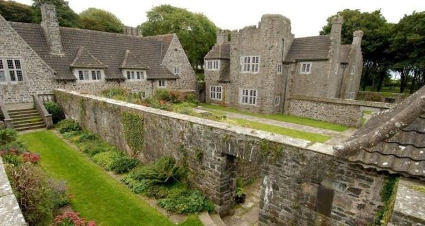

Lambay Island
Prehistory and history
The island was important in the Neolithic period in Ireland as a ground stone axe quarrying and production site. Two outcrops of andesite, or Lambay porphyry as it is more commonly known, were utilised. The quarry site is unusual in Ireland for being the only Neolithic stone axe quarry with evidence for all stages of production, from quarrying to final polishing.The ancient Greek writers Pliny and Ptolemy knew about the island and referred to it as Limnus or Limni. Its Irish name, Reachra, was eventually joined by a Norse name based on the root word ey for island. The name Lambey probably originated with the practice of sending over ewes to the island in spring to lamb in a predator-free environment.
The belief that the fore part of the name in Norse is from the word lamb makes perfect sense, but may be a later rationalisation for a name based on whatever the name of the island was at the time of Pliny and Ptolemy and the word ey. The Irish name for the nearby coastal area of Portrane, Port Reachrainn, originated from its position facing the island.
A number of Iron Age burials were discovered on the island in 1927 during works on the island's harbour. The finds included a number of Romano-British items, and the site has been interpreted as evidence for the arrival of a small group of refugees from Brigantia, fleeing the Romans from 71 to 74.
St. Columba is said to have established a monastic settlement on Lambay c. 530 AD, and Ireland's Viking age began with a raid on this place in 795. Surveying in the 20th century found remains of an enclosure to the south of the present church, and suggestions of a connected moated site (the present church dates from the early 20th century).
Sitric, a Danish King of Dublin, granted Lambay to Christ Church Cathedral, and in 1181 Prince John granted it to the Archbishops of Dublin. This was reconfirmed by King Edward in 1337 and by King Richard in 1394. A later archbishop gave the rents of the island to the nuns of Grace Dieu for the upkeep of their monastery and school. He also gave the tithes of the Lambay rabbits to the nuns and at that time the rabbit taxes were worth 100 shillings a year.
In 1467, it was provided by statute that the Earl of Worcester, then Lord Deputy, be granted Lambay to build a fortress for England's protection against the Spaniards, French and Scots. Worcester paid the Archbishop of Dublin 40 shillings per annum and though he had a licence to build a castle on Lambay it is not certain that it was actually built.
During the reformation, Archbishop Brown granted the Island to John Challoner for a rent of £6.13.4. The conditions were that Challoner would within six years build a village, castle and harbour for the benefit of fishermen and as a protection against smugglers. He was to inhabit Lambay "with a colony of honest men". He was a very active man who worked four mines for silver and copper and bred falcons on the island's many cliffs.
Challoner still owned Lambay in Elizabethan times but in 1611 the island was granted to Sir William Ussher and his heirs. James Ussher, later the Anglican Archbishop of Armagh, lived on Lambay in 1626 but by 1650 he was resident in London. He was highly respected by Cromwell and today lies buried in Westminster Abbey. The Ussher family held the island for 200 years. In the 17th century there was some exploratory lead or copper mining.
During the Williamite war in Ireland, the island was used as an internment camp for Irish soldiers. More than one thousand of them were imprisoned there after the Battle of Aughrim in 1691 and some died of wounds and starvation.
In 1805, the leasehold of Lambay was inherited by Sir William Wolseley, and in 1814 it was acquired by the Talbot family of Malahide. In 1860 the existing farmers were removed and replaced with English and Scottish tenants.
Having sold nearby Portrane House, Count James Consedine bought Lambay in 1888, developing the island for hunting. In turn, the Baring family of banking fame bought Lambay Island in 1904 for 9,000 pounds. Cecil Baring hired Sir Edwin Lutyens to work on renovation of the island's main residence and surrounds. Cecil Baring became Lord Revelstoke in 1929 and died in 1934.
The island has claimed a number of shipwrecks, one of the most notable of which was RMS Tayleur. One of the largest merchant ships of her day, she struck the island on 21 January 1854 and sank with the loss of 380 lives.
It was the landing site of the winners of the 1921 Gordon Bennett Gas Balloon Race. The pilots were Captains Armbruster and Ansermier, both Swiss. They took off from Brussels, Belgium, and flew 756 kilometres with a maximum altitude of 3,600 metres during their flight of 27 hours and 23 minutes.
Lambay Castle
A small late 16th-century fort with battlemented gables, possibly incorporating a 15th-century blockhouse, on the island was transformed by Sir Edwin Lutyens into a romantic castle for Hon. Cecil Baring, afterwards 3rd Lord Revelstoke. Baring had been working in the USA when he fell in love with the wife of one of his co-directors. She divorced her husband and married Baring. He bought the island for £5,250 in 1904 as a place to escape to with his beautiful young wife, Maude Louise Lorillard, the daughter of Pierre Lorillard, the first American to win the Epsom Derby. The story of their early life on the island inspired Julian Slade’s musical Free as Air. Lutyens made the old fort habitable and built a quadrangle of kitchens, bathrooms and extra bedrooms adjoining it, with roofs of grey pantiles sweeping down almost to the ground. He also built a circular curtain wall or enceinte surrounding the castle and its garden, with an impressive bastioned gateway; this wall serves the practical purpose of a wind break, enabling trees and plants to grow inside it – which would not grow outside. Everything is of a silvery grey stone. The rooms in the castle have vaulted ceilings and stone fireplaces; there is a stone staircase with many curves and an underground gallery in the new quadrangle which might have been conceived by Piranesi. Lutyens also designed the approach from the harbour, with curved step-like terraces reminiscent of the now-vanished Ripetta in Rome; characteristically, having ascended those Baroque steps, one has to cross an open field to come to the curtain wall, the entrance gateway not being at first visible; so there is a sense of expectancy. Close to the harbour is the White House, a largely single-storey horse-shoe shaped house with high roofs and white harled walls, which Lutyens designed in the 1930s for Lord Revelstoke's daughters Daphne and Calypso and their families, while the castle and island were left to his only son Rupert Baring. On a small cliff-top near the White House is an old Catholic chapel, with a portico of tapering stone columns and a barrel vaulted ceiling.
